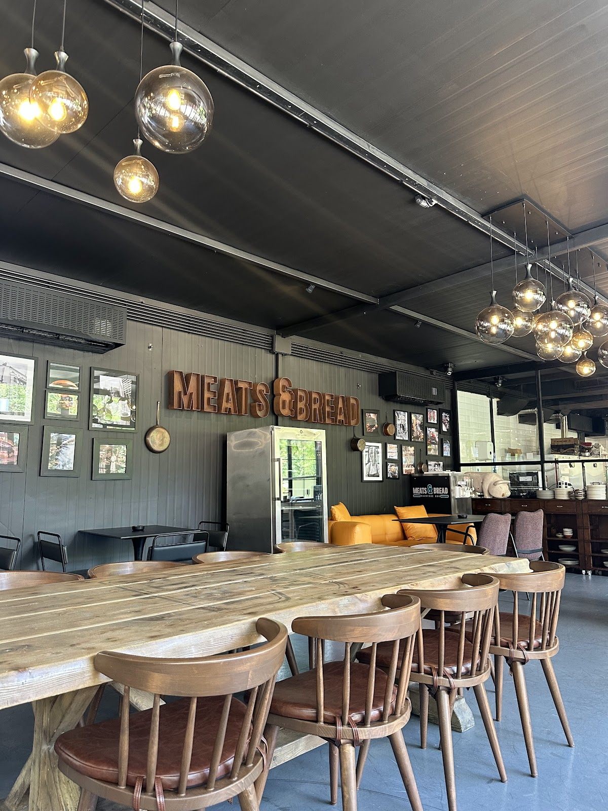
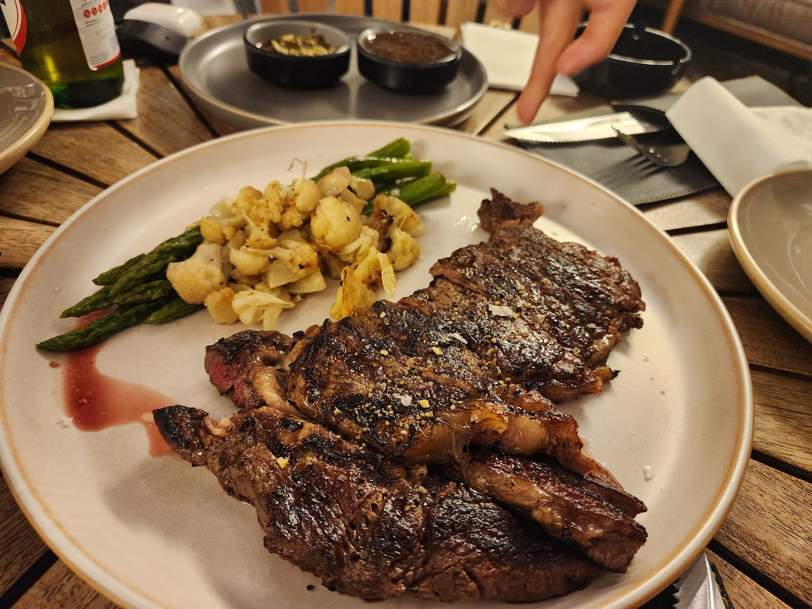

A grill room on the Naccache side of Antelias قاعة مشاوي على طرف النقاش بأنطلياس



Had a lovely lunch at Meats & Bread. The aesthetic of the restaurant is very inviting, and the staff made us feel right at home. Food-wise, the best-seller burgers are popular for a reason, juicy and flavorful.TonY NouH
A staggering 5 star review. This place is more than just a restaurant, it's an experience. We ordered the Cajun-Style Baby Backs, Elotes & Kale, Butterscotch Wings, and the WTF Burger.Bacel Alhashem
Serious meat lovers' spot! I tried a wide range of dishes at Meats & Bread, and overall it was a very solid experience.anthonysargi
| 12–11:30 PM | |
| 12–11:30 PM | |
| 12–11:30 PM | |
| 12–11:30 PM | |
| 12–11:30 PM | |
| 12–11:30 PM | |
| 12–8 PM |
Z4, Naccache, Antelias, Beirut, Lebanon
+961 76 814 418